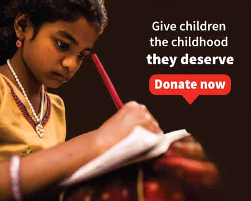
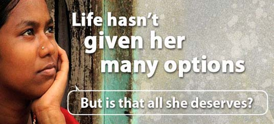

About us: Samarpan Foundation
Samarpan Foundation is a charitable not-for-profit entity. We work to provide global support and assistance of any kind where
there is humanitarian, ecological, environmental and animal welfare need.
Vision - shedding light even in the darkest corners
Mission - changing universal consciousness by opening minds and hearts
Philosophy - love, peace, happiness, kindness, simplicity, clarity


